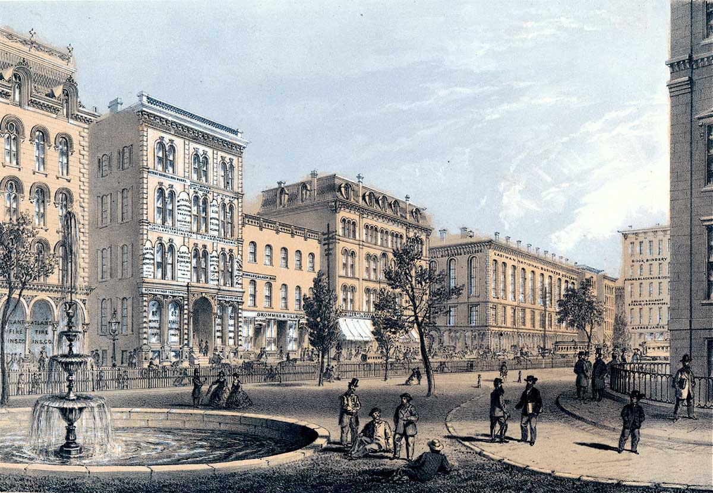
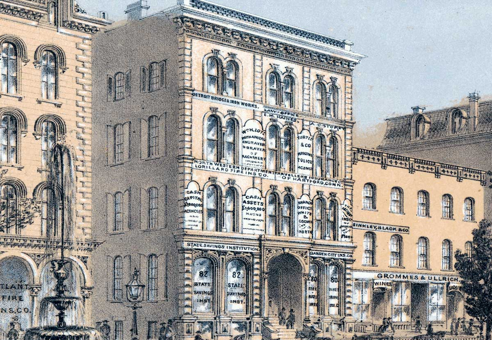
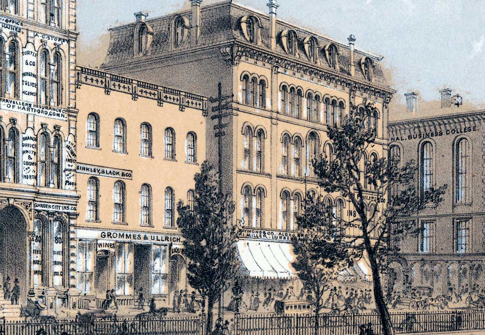
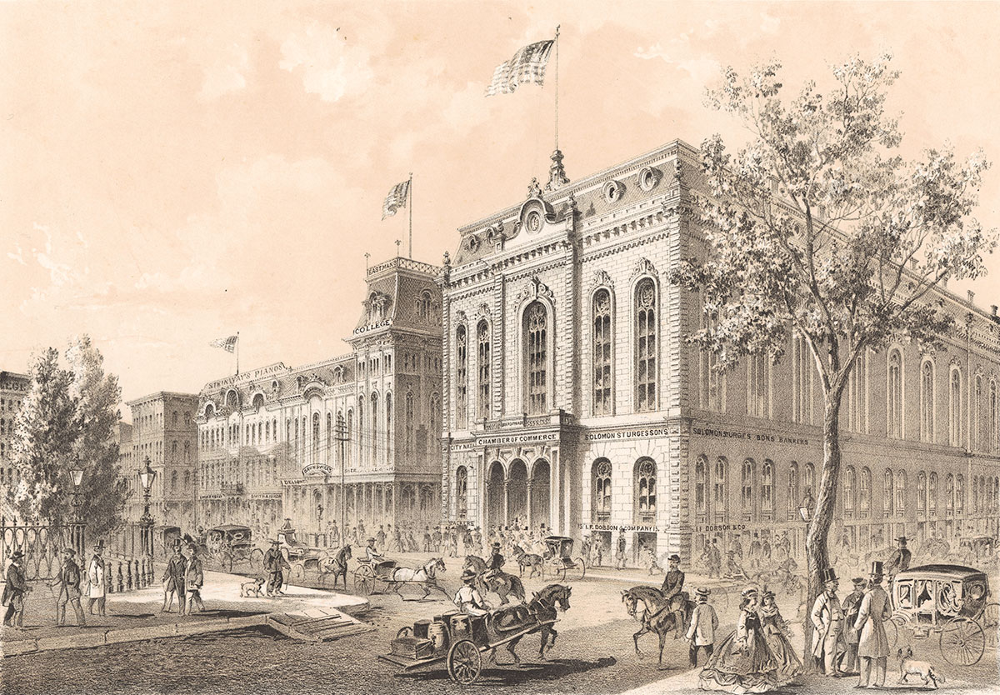
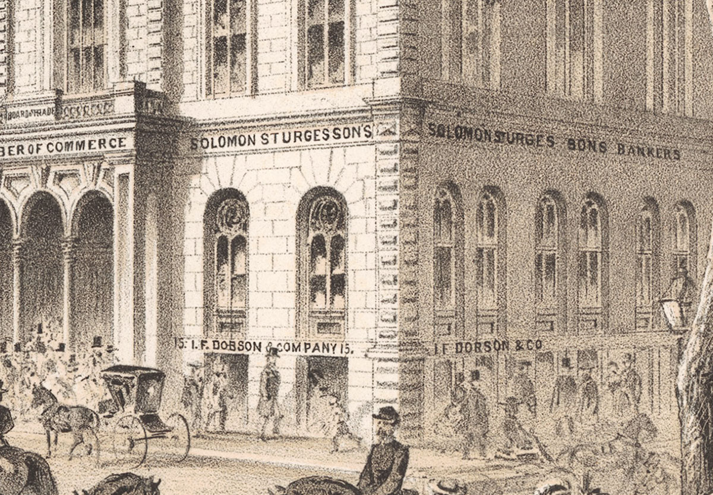
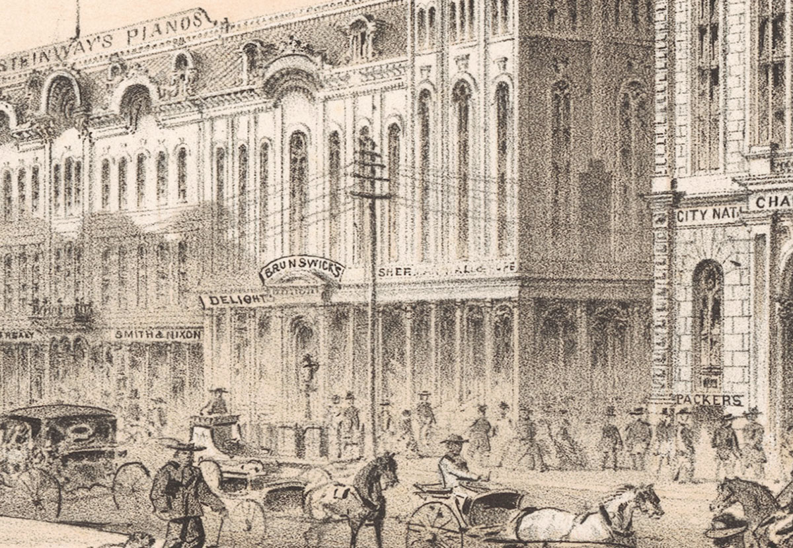

Tour Cultural Attractions
Stop in at Chicago’s world-famous theaters and museums.
Colonel Wood’s Museum
-

Colonel Wood’s Museum
No tour of Chicago is complete without a visit to Colonel Joseph Wood’s Museum on Randolph Street, just north of Clark. Guarded by a giant statue of a soldier, the museum has more than150,000 curiosities of every kind. Next-door is a Civil War claims office.
iChi-63082
-

Curiosities
The museum displays objects from all over the world, including hundreds of stuffed birds and animals and two Egyptian mummies.
iChi-63083
-

Claims office
Civil War veterans and widows can file for government pensions at the offices of Isaac Hitt. Chicago sent thousands of men to fight for the Union, many of whom never returned. Those who survived can often be seen here.
iChi-63084
LaSalle Street from Court House Square
-

LaSalle Street from Court House Square
Before leaving the Court House, take a few minutes to stroll through its lovely grounds for a soothing respite from the busy city. Across LaSalle Street stand two well-known Chicago enterprises: the State Savings Institution and Grommes & Ullrich.
iChi-i63070
-

State Savings Institution
One of Chicago’s most reliable banks, State Savings survived the economic panic of 1861 caused by the outbreak of the Civil War. Other banks weren’t as fortunate.
iChi-i63071
-

Grommes & Ullrich
Grommes & Ullrich, makers of fine whisky and wines, use this building as a storage vault. The Board of Education uses the upstairs rooms for meetings.
iChi-i63072
Chamber of Commerce
-

Chamber of Commerce
This building, located on the southeast corner of LaSalle and Washington Streets, faces Court House Square. Built by the Chicago Board of Trade for banks and insurance companies, the structure is wired for modern telegraph service.
iChi-63073
-

Solomon Sturges’ Sons Bankers
The sons of a successful grain merchant recently founded this firm. They hope to make a fortune!
iChi-63074
-

Telegraph
This marvel of modern communication came to Chicago in 1848, the same year the city’s first railroad, the Galena & Chicago Union, began operations. The telegraph connections link Chicago to older eastern cities and new western markets.
iChi-63075